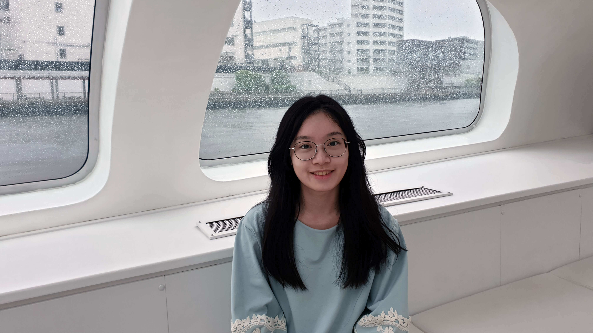

簡歷
｜Who I am｜
我是一個樂觀且有挑戰精神的人。
設計領域偶爾會碰到挫折，但我始終抱持著「挫折是前進的動力」的信念，相信只要認真審視錯誤，做出改善，就能更穩的向前邁進。在團隊合作方面，我對任何事物都是絕對細心盡責，和成員也能合作無間，並勇於承擔重大責任。
我最喜歡做的事是到處走走、逛逛。平常閒暇時，我喜歡以不同交通方式走出生活圈，去探索未知的地方，幸運的時候可以發現不錯的設計靈感和啟發。

畢業學校國立交通大學傳播與科技學系
經歷
奇美博物館展示教育組設計實習生（2018年）
交大傳科系實習展主視覺設計師（2018年）
《被遺忘的樂園》遊戲工程 & 網頁工程（2018年 - 2019年）
交大產學服務網UI / UX設計師（2018年 - 2020年）
技能
設計相關：Illustrator、Photoshop、Adobe XD、Premiere
網頁語法：HTML、CSS、JavaScript、jQuery
英語能力
GEPT 中高級通過、TOEIC 860分
獎項
台灣教育傳播暨科技學會年會@NCTU國際學術研討會數位媒體競賽第二名（2019年）
>> 履歷電子檔